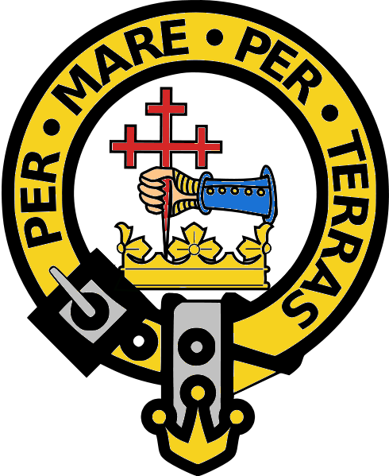
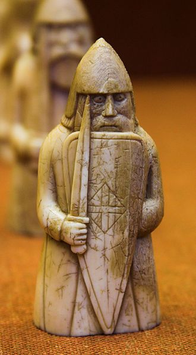
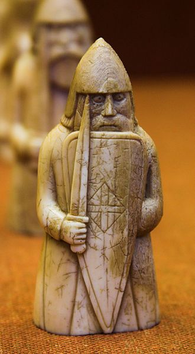
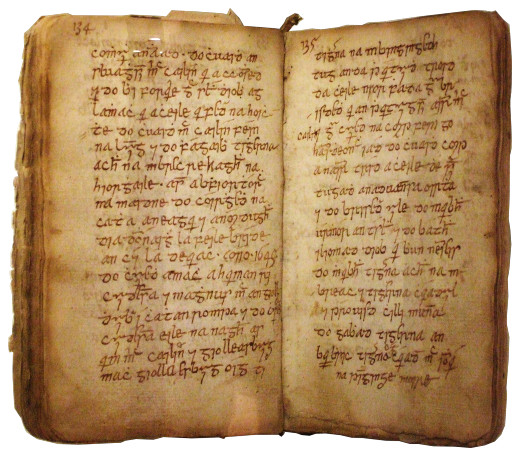
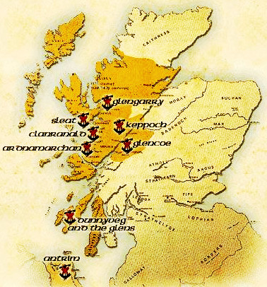
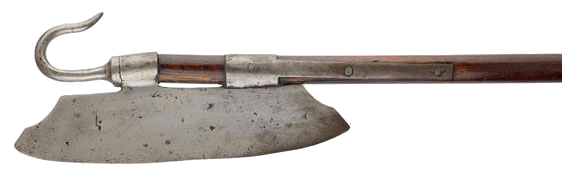
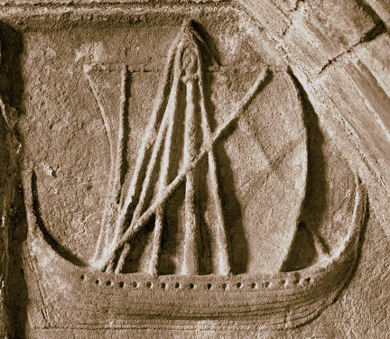

-

The McDonalds
variously written as McDonald, MacDonald, Mcdonald, Macdonald, McDonnell, Macdonnell etc. Our family has a lot of McDonalds and the name John McDonald pops up all over the place.
Our family has a lot of McDonalds and the name John McDonald pops up all over the place.Norse Warrior from the Lewis Chessmen
At one time or another, both British and Germans managed to find McDonalds to marry.
Some examples are:
John McDonald m. Flora Kennedy (parents of » Catherine (McDonald) Halling)
John McDonald m. Elizabeth Campbell (parents of » Alexander Duncan McDonald)
John McDonald m. Jessie McIntyre (parents of » Jessie (McDonald) Fenwick)
John McDonald m. Margaret Stamp
John McDonald m. Ethel Benson
John McDonald m. Elizabeth May Campbell
John McDonald m. Frances Chapman
John MacDonald m. Bridget Shea (grandsparents of Ernest Allen who married Mildred Pieper)
John MacDonald (brother of Ernest Allen MacDonald)
Origins
Legend has it that the MacDonalds ultimately descend from Somerled (or Somhairlidh, d.1164), the Norse-Gaelic King of the western Scottish Isles, accredited with freeing the Gaelic people from their ancient Norse rule. This was achieved by Somerled declaring himself to be their new Gaelic ruler.He was already in a good position to do that, as he was already their current Norse overlord.The Red Book which tells the tale of Clan Donald
Somerled married Ragnhild, daughter of Óláfr Guðrøðarson, the King of Man. When Olaf died his son Godred, Somerled's brother-in-law, took over. This made everyone else rather unhappy. Consequently Thorfinn Ottarson, a Manx chief wanted Somerled's son Dugall to be the new king. Somerled set himself against Godred in a sea battle and as a result, the kindom was split in two; half for Godred, half for Dugall.Map of MacDonald clans in Scotland
So Godred and Dugall took up running the place but they too couldn't settle on a peaceful existence and fought for supremacy amongst each other. Dugall won out but that still didn't bring peace. There continued to be disputes over rightful patrilineal descendancy and ownership between Dugall and his brother Ranald. This brought about a further split.
Dugall's descendants included the Lords of Argyll and the Clan MacDougall. The descendants of Dugall's brother Ranald included the Lords of the Isles, Clan Donald, Clan MacRory, and Clan MacAlister. The MacDonalds of Clan Donald traditionally derive their name from the legendary son of Ranald (or Ragnhall) known as Donald (or Domhnall) who lived around 1192.
To complicate matters further, Somerled's wife, Ragnhild and her family also staked their matrilineal claims. As a result a lot of MacDonald clans sprang up alongside each other. Nevertheless there remained in all of them a certain feistiness that prevailed over most of western Scotland.
In the fifteenth century after innumerable battles with the kings of Scotland, the MacDonalds emerged as the Earls of Ross. But this glory was short lived when in 1475 James III stripped them of those titles and lands. As a final blow, James IV enforced forfeiture of all titles and claims to Lord of the Isles. The McDonalds swore allegiance to restore it. Many of them also took to fighting for the Jacobite cause.
Clan Donald, MacDonald or McDonell?
The variations in spelling of the surnames for the descendants of the clans are from many attempts over time at anglicising the original Gaelic forms. The Gaelic form of the patronymic name is MacDhòmhnaill, literally son of Dòmhnall.
There are a number of officially recognised branches of the clan, namely Clan MacDonald of Keppoch, Clan MacDonell of Glengarry, Clan Macdonald of Sleat, Clan Macdonald of Clanranald and Clan MacAlister.
Also deserving mention are historic branches such as Clan MacDonald of Dunnyveg, Clan MacDonald of Lochalsh, the MacDonalds of Glencoe, the MacDonalds of Ardnamurchan, and in Ireland there is also a cadet branch, the MacDonnells of Antrim.
For centuries, Clan Donald chiefs carried the title, Lord of the Isles. John of Islay (John MacDonald) was the fourth and last Lord of the Isles, the lordship having been terminated in 1493 by James IV. John was the son of Alexander of Islay, 3rd Lord of the Isles, Earl of Ross and his wife Elizabeth Seton the daughter of Alexander, Lord of Gordon and Huntly. Alexander and his forces had fought against the royalist army of James I at the battle of Lochaber in 1429 but was defeated and imprisoned. Two years later Alexander's cousin (or nephew) Dòmhnall Ballach Mac Dhòmhnaill took up the cudgel and lead the MacDonalds to victory at the battle of Inverlochy.
The Redshanks
In the early sixteenth century, after the demise of the clan's titles and rights, the MacDonalds were banished from their lands and rendered homeless and unemployed. Naturally they had to look for something else to keep them busy. Fighting was their specialty so many of them turned to mercenary work and joined the redshanks.A Lochaber Axe
They were called that because they were renowned for being a rather rugged bunch, dressed in plaids with bare legs and bare feet yet still capable of wading through icy cold water, which naturally enough made their shanks go very red. They were armed to the teeth with a short bow, a two-handed claymore and a Lochaber axe. Later they adopted the targe, a single handed broadsword, and then the musket. Armed in that mannner, the redshanks could attack with a volley of gunshots and then charge with sword and targe.
As an extra bonus, in times of peace the Lochaber Axe could also also be employed as a scythe down on the farm. And the hook on the end made it handy to hang neatly on the barn wall.
With Birlinns, by Sea, by Land
The clan crest is encircled by the motto in Latin 'Per Mare - Per Terras',
or in Gaelic 'Air Muir s’Air Tir', or in English 'By Sea, By Land'. The crest was traditionally worn with a sprig of heather through it, reminiscing the battle cry of the clan, Fraoch eilean ('the heathery isle').
The motto recalls the legend of Somhairlidh (Somerled) who with 160 birlinns of his own invention, packed full with his armies, travelled “by sea” to make an assault “by land”. Somerled's birlinn was similar to the usual Norwegian longship but redesigned to be smaller and include a central rudder for greater ease of movement.
Shipbuilding in their bloodA birlinn depicted in stone
in St Clement's Church, Harris
Necessarily to be a powerful sea faring nation, a lot of ships are needed. Next to fighting, shipbuilding was a major occupation of the MacDonalds. Wood is a must-have for shipbuilding and oak being the most durable was much sought after. The most favored source for that oak was Lochaber. The wood was so abundant there that the saying, "B'e sin fiodh a chur do Loch Abar" (bringing wood to Lochaber) was used if something was a pointless excercise.
Because no remains of a birlinn have ever been found, there can be no definite way of knowing what techniques were used in building them. Some scholars even doubt that traditional Norwegian methods were employed. The only sure thing is that they are no longer built. In more modern times, the eclipsing of wooden ship building by that of steam driven ships and a huge boat building industry with gargantuan shipyards further clouds investigation.

A Shipwright's Axe
Alexander the Shipwright
So when it comes to our own McDonalds, to try to ascertain what a shipwright was in the nineteenth century on the Island of Mull, or even in Glasgow, is nigh on impossible. It would be like trying to take wood to Lochaber.
Nevertheless, Alexander Duncan McDonald at the ripe age of 22 when he migrated to Australia with his wife Catherine Gillies, listed himself as shipwright. Perhaps when he eventually turned his hand to farming he had already discovered that his profession was somewhat redundant. He still retained a lot of the McDonald feistiness and managed to channel it into fighting an endless battle against alcohol consumption as a member of the I.O.G.T. (Independent Order of the Good Templars).
read the McDonalds in Australia »
{kind=link}
{kind=link}
{kind=link}
{kind=link}
{kind=link}
{kind=link}
{kind=link}
About Us
We are the descendants of Anglo-Scottish-Prusso-Germanic Australian migrants who settled in the newly formed colonies of New South Wales and Queensland in the nineteenth century. The idea behind these pages is to present the stories and characters of those early settlers along with information about their origins, descendants, families, whereabouts and activities.There are often themes running through their struggles and achievements telling a tale of resourcefulness and hardships in an alien world. The paradox of Australia as an ancient and raw continent and as a 'New World' portrays a collision of ideals and realities yet still shows a continuity in how those people dealt with everyday life.